Lecture 7: Electric Forces and Electric Fields#
Learning Objectives#
By the end of this lecture you should:
Be able to define what electric fields are and calculate the electric field strength around a charge.
Be able to define the coulomb force and calculate the force on charged particles in different scenarios.
Charge Recap#
Charge is a physical property that some particles posses. For example, an electron has a negative charge, whereas a proton has a positive charge. If an object comprises an equal amount of negative and positive charges, it is said to be electrically neutral.
Charge is measued using the unit Coulomb which is denoted as C. The charge of an electron is \(-1.602 \times 10^{-19} \, \text{C}\) and the charge of a proton is \(1.602 \times 10^{-19} \, \text{C}\). Their charges are equal and opposite.
Note
We can see that the magnitude of an individual charge is very small. As such it is often convinent to refer to an amount of charge in terms of the magnitude of the electron charge. For example, you may see a problem that states “body A has a charge of \(+2e\)”, which means it has a positive charge equal to twice that of the magnitude of the electron charge.
Charges also exert an electric force on one another. If these charges are of the same polarity, the force will be repulsive, and if they are oppositely charged, the force will be attractive.
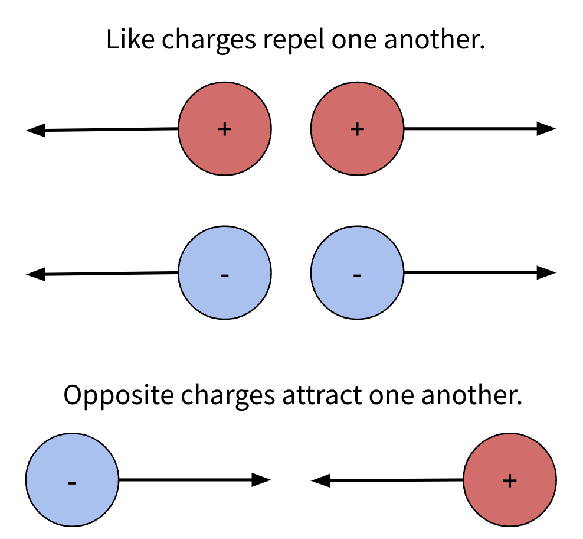
Electric Forces and Coulombs Law#
When a charge is placed in an electric field it will experience a force. The direction of the force is dependant on the direction of the electric field and the polarity of the charge. Charges themselves have their own electric field, which is why charges exert forces on one another.
The magnitude of the attractive or repulsive force between charges is dependant on two factors:
The magnitude of each of the charges, the greater the amount of charge, the greater the force.
The seperation between charges, the greater the distance seperating the charges, the weaker the force will be. This is an inverse-square relationship.
It is possible to draw parallels between the electrostatic force and the graviational force between masses. In the latter case the force was proportional to mass rather than charge, but otherwise very similar. The graviational force can be calculated using the equation:
\( F_G = G\frac{m_1m_2}{r^2}, \)
where \(G\) is the graviational constant, \(m_1\) and \(m_2\) are the masses of the objects and \(r\) is the distance seperating the two bodies. A very similar equation is used to determine the force acting between charges:
\( F = \frac{1}{4\pi\epsilon_0}\frac{Qq}{r^2}, \)
where \(\epsilon_0\) is the permitivity of free space (\(\epsilon_0 = 8.854 \times 10^{-12}\,m^{-3}\,kg^{-1}\,s^4 \, A^2\)), \(Q\) and \(q\) are the magnitudes of the respective charges in coulombs, and \(r\) is the distance seperating the charges in metres. This is known as Coulomb’s law, named after Charles-Augustin de Coulomb who discovered it. We assume that the charges are dimensionless points when using Coulomb’s law.
As the first part of the equation is simply made up of constants, it is also often expressed as:
\( F = k \frac{Qq}{r^2}, \)
where
\( k = \frac{1}{4\pi\epsilon_0}.\)
The constant \(k\) is known as the Coulomb constant and has a value equal to \(8.99 \times 10^9 \,N\,m^2\,C^{-2}\). We recomend using this version of the Coulomb’s Law as it is easier to use.
Consider two oppositely charged particles. The force acting between them would be negative owing to the fact that the one value of \(Q\) would be positive and the other negative (positive \(\times\) negative = negative). If both charges had the same charge, the force would be positive (positive \(\times\) positive = positive OR negative \(\times\) negative = positive). Therefore, by convention an attractive force is negative and a repulsive force is positive. The magntitude of the force remains the same. When working with two or three dimensional systems of charges, it may be more convinient to simply calculate the magnitude of the force and consider the direction it acts using free body force diagrams.
Important - Coulomb’s Law
Coulomb’s law states that the force acting between two charges is proportional the the magnitudes of the charges and inversely proportional to the square of the distance seperating the charges. The magnitude of the force can be calculated using the equation:
\( F = k \frac{Qq}{r^2}, \)
The magnetude of the force can be calulated by taking the absolute value of the force by disregarding the polarity of the charges:
\( |F| = k \frac{|Qq|}{r^2}. \)
Electric Fields#
As mentioned previously, charges produced their own electric fields, but what is an electric field?
An electric field is a vector field (has magnitude and direction) generated by charges. Electric fields are represented by field lines, which in the cases of point charges, are directed radially away from or to the charge for a positive and negative charge, respectviely.
Positive charges travel down field lines, whereas negative charges travel up field lines (see figure below).
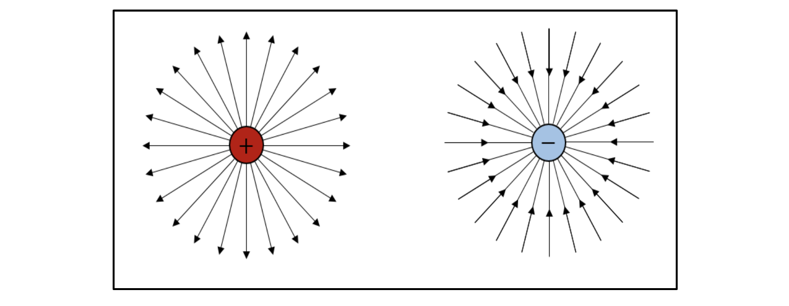
The strength of an electric field, \(E\), at any given point is defined as the the force per unit charge placed at that point, which can be expressed mathematically as:
\(E = \frac{F}{q}. \)
If we substitute in our expression for the force, this expression becomes:
\( E = k \frac{|Qq|}{r^2} \times \frac{1}{q}, \)
\( E = k \frac{|Q|}{r^2}. \)
The unit of the electric field strength is \(V \,m^{-1}\).
Vectors
You may often see the electric field denoted as \(\vec{E}\). The line above \(E\) is present to indicate that this is a vector quantity. Esentially, this means that depending on the defined orientation, an electric field line may have \(x\), \(y\) and \(z\) components such that:
\( \vec{E_{net}} = (E_x, E_y, E_z). \)
The figure below shows how a vector can be resolved into its individual components:
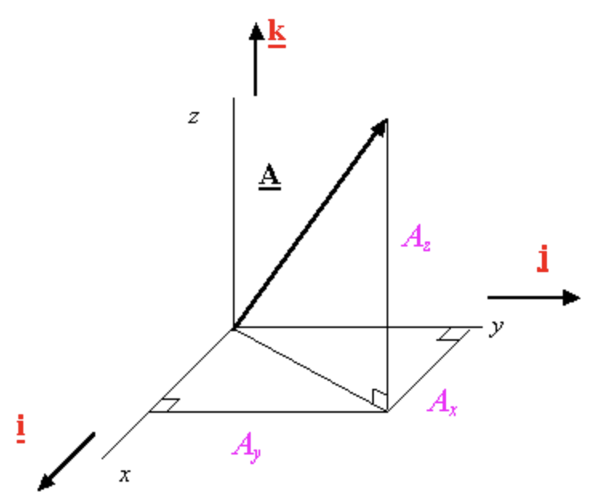
The components can be combined to give the magnitude of the electric field. The magntiude of the vector \(\vec{A}\) can be calculated using Pythagoras as:
\( |\vec{A}| = \sqrt{A_x^2 + A_y^2 + A_z^2}.\)
The \(x\), \(y\) and \(z\) components can also be resolved from \(\vec{A}\) using trigonometry.
Multiple Charges#
When a system contains multiple charges, we must consider the net electric field. Esentially, at any given point in space the vector fields of each of the charges are summed together:
\( \vec{E_{net}} = (E_x, E_y, E_z) = \left(\sum{k\frac{Q_n}{r^2_{x,n}}},\sum{k\frac{Q_n}{r^2_{y,n}}}, \sum{k\frac{Q_n}{r^2_{z,n}}}\right).\)
When this is shown on a field map we see that field lines become curved as shown below:
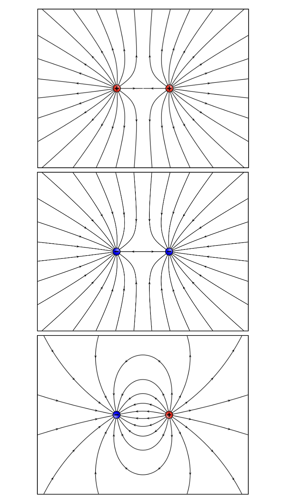
The example with the opposing charges is known as a dipole electric field.
Charging Materials#
When a material has an equal amount of positive and negative charges evenly distriubted through it, it is said to be neutrally charge. This is because the total amount of negative charge will cancel out with the total amount of positive charge.
If a material is initially neutrally charged that is not to say it can not aquire a net charge. This is typically achieved by changing the amount of negative charge the material posseses by removing or adding electrons. We can do this using any of three methods: induction, conduction or friction.
Charging by Induction#
Electrostatic induction occurs when a charged object is brought into proximity with a neutrally charged object. The charges in the neutrally charged object in the electric field produced by the charged object experience a force. Assuming that the charged object is positive, when brought near the neutrally charged object, the negatively charged electrons will experience an attractive force pulling them towards the charge object.
As the negative charged electrons have accumulated on one side of the object, the opposite side will now have a relative excess of positive charge. This seperation of positive and negative charges is known as polarisation and the object is said to be electrically polarised. In this example, should the positively charged object be removed, the electrons would evenly redistribute themselves within the material and the object would return to an electrically neutral state.
In order to perminantly charge an object by induction we actually need to introduce a second neutrally charged object. Consider the figure below:
If we bring our two neutrally charged objects into contact with one another and then introduce the positively charged object,
the electrons from both objects will accumulate on the object nearest to the positively charged object. Therefore one object has a net negative charge whereas the other is left with a net positive charge.
If contact between the two initially electrically neutral objects is broken during this state of electric polarisation, one will be left with the excess electrons and the other with the electron defecit.
The two objects have now become oppositely charged. In the absence of an external electric field, the charges will then evenly distribute themselves amongst the surface of the objects.
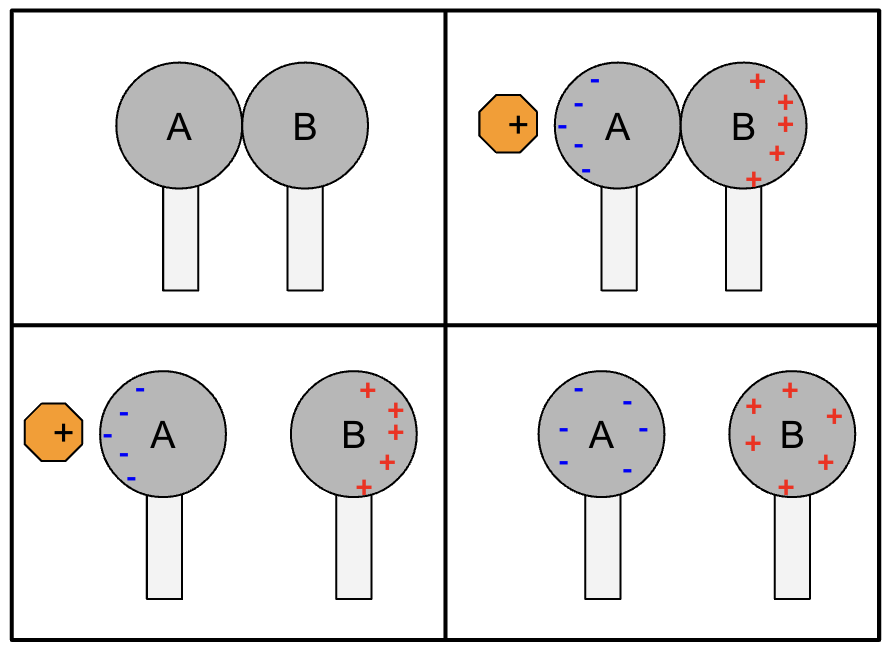
Charging by Conduction#
A material is electrically conductive if electrons are able to move throughout it. Objects made from different materials will have various levels of electrical conductivity, for example, although all metals are conductive due to their excess of delocalised electrons, some metals are more conductive than others e.g. aluminium is only about 61% as conductive as copper, which is only ~95% as conductive as silver. Naturally, it makes sense that wires are made of copper rather than silver, afterall copper is much more abundant and therefore cheaper than silver but with a very similar level of electrical conductivity.
If two conductors have a different net charges, an electric field will be established between them. This means that when they are brought into contact with one another, the negative charges on one conductor will experience an electric force. In the case of electrons, this force will direct them up the electric field to the more positively charged conductor. As more and more charges are transferred to the intially more positively charged conductor, the strength of the electric field between the conductors will decrease until the electrons are shared between them, they are equally charged and there is no net electric field between them. This is process is demonstrated in the gif and figure below.
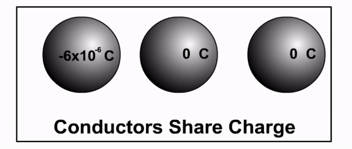
It is worth noting that these two conductors do not necessarily need to be positively and negatively charged. They could both be positively charged or both be negatively charged but to different degrees (i.e one is more negative than the other), or one is charged and the other is neutral. In these scenarios there will will still be an electric field established between the conductors that allows for the movement of charges.
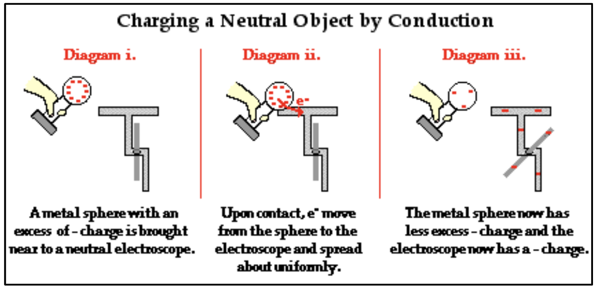
Charging by Friction#
The final method that can be used to charge and object is by friction. Esentially, by rubbing two insulating materials together, one can be stripped of its electrons by the other. This exchange of charge leaves one material with a surplus of electrons and a net negative charge and the other with an electron defecit and a net positive charge.
The direction in which the electrons move is dependant on the material of the objects. For example, if a neutrally charged silk cloth is rubbed against a neutrally charged plastic rod, electrons will be transferred from the cloth to the rod. Hence the rod becomes negatively charged and the cloth positively charged.
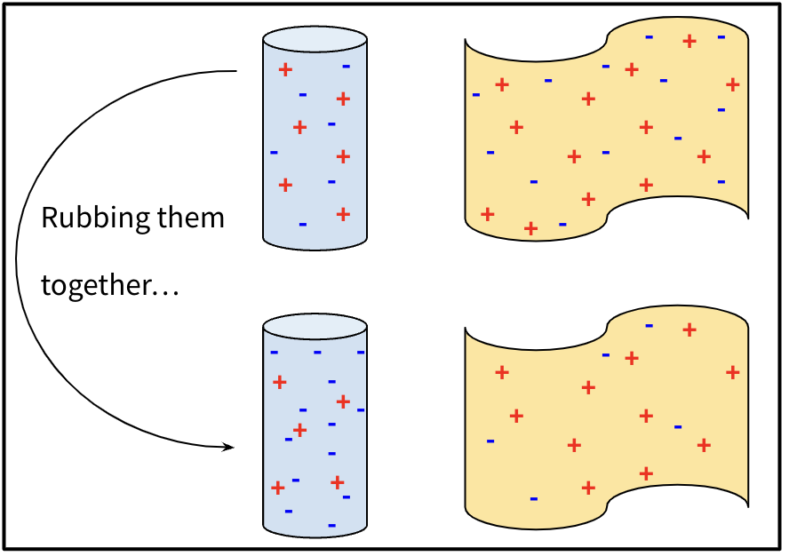
Important
Neutrally charged materials can become charged by any of three mechanisms: induction, conduction or friction. In any case, charges are transferred from one body to another leaving one body with a surplus of electrons and a negative charge and the other with an electron defecit and a positive charge.
Questions#
Warning
Atempt the questions before looking at the solutions otherwise you will not learn!
Students who look at mark schemes without going through the motions of a question often think “yes, that’s what I would have done”, but are then unable to perfom on exams as the knowledge was never consolidated through practise.
Note
Units have been omitted in calculations below for simplicity. Ensure you know what each value represents.
Question 1#
Two charges, \(Q = 3.2 \times 10^{-19}\, C\) and \(Q = -1.6 \times 10^{-19}\, C\) are seperated by a distance of \(2 \times 10^{-10} \, m\).
What is the magnitude of the force acting between them? Is this force attractive or repulsive?
Q1 Solution
The magnitude of the force can be calculated using Coulomb’s Law:
\( |F| = k \frac{|Qq|}{r^2}, \)
\( |F| = 8.99 \times 10^9 \frac{|3.2 \times 10^{-19}\times -1.6 \times 10^{-19}|}{\left( 10^{-10} \right)^2}, \)
\( |F| = 4.6 \times 10^{-9} \, N.\)
The charges have opposite polarities so the force between them is attractive.
Question 2#
Calculate the net force acting on charge \(Q_2\) in the system illustrated below.
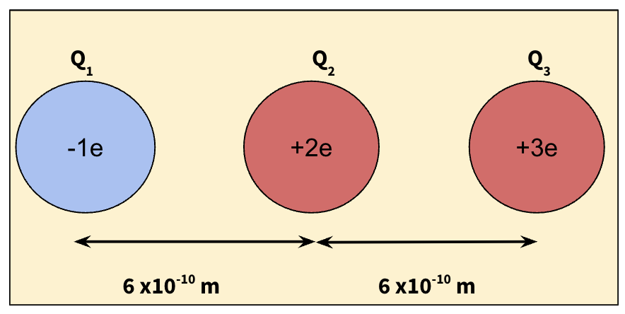.
Hint
Remember to account for the fact that charge \(Q_2\) is positioned between two oppositely charged charges.
Q2 Solution
To determine the net force, we simply need to add together the forces acting due to the charges eitherside. As all of the charges are aligned, the force is only going to be acting in the \(x\)-direction. The charge to the right has the same polarity so will force the central charge to the left. The charge on the left is oppositely charged so will the attractive force will also pull the central charge to the left. This means that to determine the total force acting on the central charge we can just add the forces together as they act in the same direction.
\( F_{net} = k \frac{|Q_1 Q_2|}{r_{1,2}^2} + k \frac{|Q_3 Q_2|}{r_{3,2}^2}, \)
\( F_{net} = k \left( \frac{|Q_1 Q_2|}{r_{1,2}^2} + \frac{|Q_3 Q_2|}{r_{3,2}^2}\right), \)
\( F_{net} = 8.99 \times 10^9 \left( \frac{|-1(1.6 \times 10^{-19} \times 2(1.6 \times 10^{-19})|}{\left( 6^{-10} \right)^2} + \frac{|2(1.6 \times 10^{-19} \times 3(1.6 \times 10^{-19})|}{\left( 6^{-10} \right)^2} \right), \)
\( F_{net} = 5.1 \times 10^{-9} \, N = 5.1 \, nN. \)
The direction of the force is to the left.
Question 3#
Calculate the magnetude of the net force acting on charge \(Q_2\) in the system illustrated below.
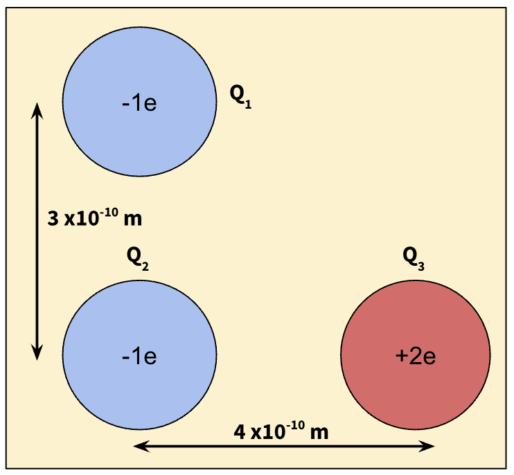.
Hint
This time the charges are distributed in two dimensions (the \(x\) and \(y\) planes), so you must consider the forces acting in both the x and y directions to determine the net force (and its magnitude).
Q3 Solution
To determine the magnetude of the net force, we simply need to add together the forces acting due to the other charges. Let us first consider the force acting in the x-direction. This is going to be an attractive force that pulls \(Q_2\) to the right:
\( F_{x} = k \frac{Q_2 Q_3}{r_{2,3}^2}, \)
\( F_{x} = 8.99 \times 10^9 \frac{-1(1.6 \times 10^{-19} \times 2(1.6 \times 10^{-19})}{\left( 4^{-10} \right)^2}, \)
\( F_{x} = -2.88 \, nN. \)
Similarly, we can calculate the magnitude of the force in the y-direction. This force is going to be repulsive and therefore push \(Q_2\) downwards:
\( F_{y} = k \frac{Q_1 Q_2}{r_{1,2}^2}, \)
\( F_{y} = 8.99 \times 10^9 \frac{-1(1.6 \times 10^{-19} \times -1(1.6 \times 10^{-19})}{\left( 3^{-10} \right)^2}, \)
\( F_{y} = 2.56 \, nN. \)
Therefore the net force acting on the charge \(Q_2\) is \(F_net = (F_x, F_y) = (-2.88, 2.56) \, nN\). As these forces are acting perpendiculally to one another, the magnetiude of the net force can be determined simply using Pythagoras:
\( |F_{net}| = \sqrt{F_x^2 + F_y^2}, \)
\( |F_{net}| = \sqrt{-2.88^2 + 2.56^2}, \)
\( |F_{net}| = 3.85 \, nN \).
Question 4#
What is the electric field strength \(1.2\, m\) away from an object with a charge of \(+5.0 \, \mu C\)?
Q4 Solution
The electric field strength can be calculated directly:
\( E \frac {F}{q} = k \frac{Q}{r^2} \)
\( E = \frac{8.99 \times 10^9 \cdot 5\times10^{-6}}{1.2^2} \)
\( E = 31215.27 \, V\, m^{-1} \)
\( E = 31000 \, V\, m^{-1} \)
Question 5#
Determine the magnitude of the electric field at point \(q_4\) from the diagram below.
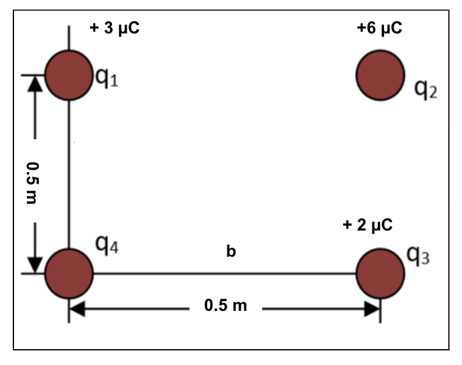
Hint
In this example you will need to find the magnetiude of the electric field in the x and y directions at the point \(q_4\) in the same fashion as you did for the forces in question 3. However, this time there is also a charge in the top right corner which will produce an electric field which has \(x\) and \(y\) components at point \(q_4\). You will need to resolve these using trig to add them to electric fields in the \(x\) and \(y\) directions from the other charges.
Q5 Solution
First, let us determine the distance that charge \(q_2\) is from point \(q_4\). This can be done using Pythagoras as we know the \(x\) and \(y\) displacements:
\( r_{2} = \sqrt{0.5^2 + 0.5^2}, \)
\( r_{2} = \sqrt{\frac{1}{2}}. \)
We can also find the angle between \(q_2\) and the \(x\) axis using trigonometry:
\( \tan\theta = \frac{O}{A}, \)
\( \theta = \tan^-1\left(\frac{0}{A}\right), \)
\( \theta = \tan^-1\left(\frac{0.5}{0.5}\right), \)
\( \theta = 45˚.\)
This must also mean that the angle between \(q_2\) and the \(y\) axis is also \(45˚\). We can now determine what the electric field at point \(q_4\) due to charge \(q_2\) is:
\(E_{2} = 8.99 \times 10^9 \cdot \frac{6 \times 10^{-6}}{\sqrt{\frac{1}{2}}^2} \)
This electric field can then be resolved into its \(x\) and \(y\) components by multiplying it by \(\cos\theta\) and \(\sin\theta\):
\(E_{2,y} = 8.99 \times 10^9 \cdot \frac{6 \times 10^{-6}}{\frac{1}{2}} \cdot\cos\theta, \)
\(E_{2,y} = 2\cdot 8.99 \times 10^9 \cdot 6 \times 10^{-6} \cdot \cos\theta, \)
\(E_{2,y} = 2\cdot 8.99 \times 10^9 \cdot 6 \times 10^{-6} \cdot \cos(45), \)
\(E_{2,y} = 2\cdot 8.99 \times 10^9 \cdot 6 \times 10^{-6} \cdot \frac{1}{\sqrt{2}}, \)
\(E_{2,y} = \frac{2\cdot 8.99 \times 10^9 \cdot 6 \times 10^{-6}}{\sqrt{2}}. \)
Similarly for the \(x\) component:
\(E_{2,x} = 8.99 \times 10^9 \cdot \frac{6 \times 10^{-6}}{\frac{1}{2}} \cdot\sin\theta, \)
\(E_{2,x} = 2\cdot 8.99 \times 10^9 \cdot 6 \times 10^{-6} \cdot \sin\theta, \)
\(E_{2,x} = 2\cdot 8.99 \times 10^9 \cdot 6 \times 10^{-6} \cdot \sin(45), \)
\(E_{2,x} = 2\cdot 8.99 \times 10^9 \cdot 6 \times 10^{-6} \cdot \frac{1}{\sqrt{2}}, \)
\(E_{2,x} = \frac{2\cdot 8.99 \times 10^9 \cdot 6 \times 10^{-6}}{\sqrt{2}}. \)
We can now determine the total contributions to the electric field at point \(q_2\) by also considering the charges \(q_1\) and \(q_3\):
\( E_y = E_{2,y} + E_{1} \)
\(E_y = \frac{2\cdot 8.99 \times 10^9 \cdot 6 \times 10^{-6}}{\sqrt{2}} + \frac{8.99 \times 10^9 \cdot 3 \times 10^{-6}}{0.5^2}, \)
\(E_y = 1.84 \times 10^5 \, V\, m^{-1}, \)
and
\( E_x = E_{2,x} + E_{3} \)
\(E_x = \frac{2\cdot 8.99 \times 10^9 \cdot 6 \times 10^{-6}}{\sqrt{2}} + \frac{8.99 \times 10^9 \cdot 2 \times 10^{-6}}{0.5^2}, \)
\(E_x = 1.48 \times 10^5 \, V\, m^{-1}. \)
Therefore the electric field is:
\( \vec{E} = (1.48, 1.84) \times 10^5 \, V\, m^{-1}. \)
Finally the magnitude of the electric field can be determined as:
\(|\vec{E}| = \sqrt{\left(1.48 \times 10^5 \right)^2 + \left(1.84 \times 10^5 \right)^2}, \)
\(|\vec{E}| = 2.36 \times 10^5 \, V \, m^{-1}.\)